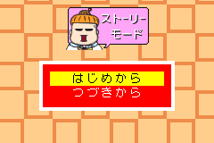
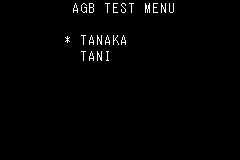

Saibara Rieko no Dendou Mahjong (Japan)
Stateless / Passcode Debug Menu Patch 💾 MultiBoot 🎮 4P Link
Cartridge Identity
- Game Code
ASMJ(FamilyASM)- Header Title
DENDOHMAJANG- Maker / Revision
AG/ rev0- ROM Size
- 4.0 MiB (4,194,304 B)
- Save Media
None / Unknown- SHA-256
9b7e8e8506fb3b18ee241b4b8710b3d4c82a6ca602905549db624fd6a2f93c69
Screenshots

Debug Menu Re-Enablement Patch (.ips)
Download ASMJ-debug.ips (17 B IPS / 4 B delta)
- Hook Mechanism
pointer_literal_override· Patch boot task constructor pointer literal at 0x080004a4 to point to AGB TEST MENU launcher (0x0800279C)- IPS SHA-256
8ee742ab60633dea31c3c378770b0104a70137f4eeb794994c1c70f4190d9904
gbakit patch apply ASMJ-debug.ips original.gba patched-debug.gba

Link Cable & Multiplayer Communications
This title contains detected communication capabilities: 💾 MultiBoot 🎮 4P Link.
Detailed protocol specifications, SIO registers, Joybus commands, and MultiBoot sequences are documented in the Link & Multiplayer Reference.
- Multi-Player SIO (4P)
- 16-bit ring network · SIOCNT (
0x04000128) literals:0x0032c8,0x003324,0x0036ec· SIODATA32/SIOMULTI0 (0x04000120) literals:0x0033e4,0x003448,0x0034b4 - Single-Cart MultiBoot
- Single-Cartridge MultiBoot (Download Play) client/server handler · Thumb SWI 0x25 (
0xDF25):0x03d6f6,0x076f60,0x07b3f6,0x07bcf0
Cartridge Storage Architecture: Stateless / Passcode
Zero non-volatile battery hardware: This cartridge PCB contains ROM only (no SRAM, Flash, or EEPROM chips). Progression is preserved via on-screen passcodes or session-only gameplay. No
.sav file is generated or required.
Text, Fonts & Scene Data
- Primary Text Encoding
- Shift-JIS (uncompressed) (
20ASCII strings ·200Shift-JIS runs) - Font & VWF Indicators
- VWF Width Table 1bpp Font · BIOS SWIs: BitUnPack
0x10:2· LZ770x11/12:10· Huffman0x13:9· RLE0x14/15:13 - Scene & Packaging
24ROM pointer tables (≥32 entries,2≥200) ·0relativeu32TOCs ·439OAM metasprite hits
Password System
- Save Media
- Battery-Backed (SRAM)
- Password Class
- Password UI Strings Detected (
password_ui_strings_only)